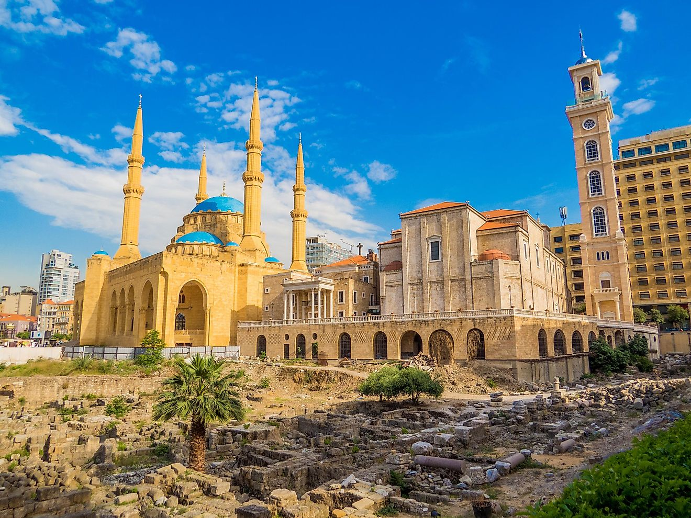
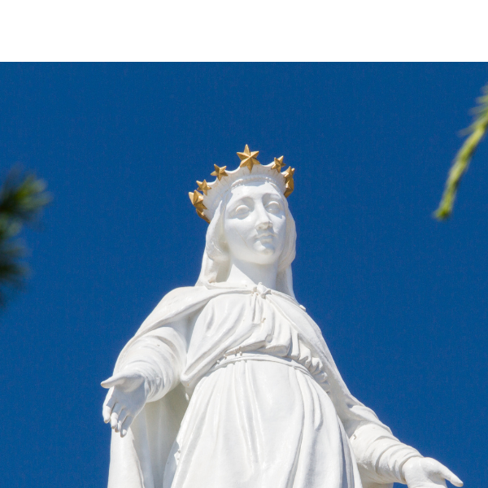
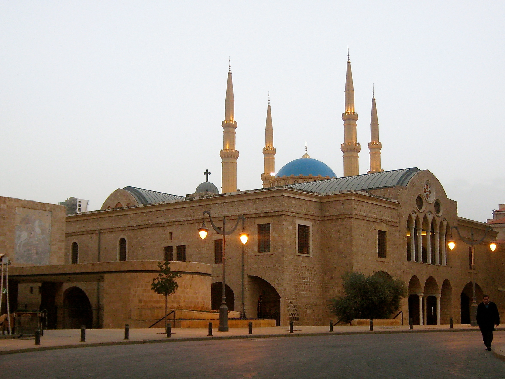
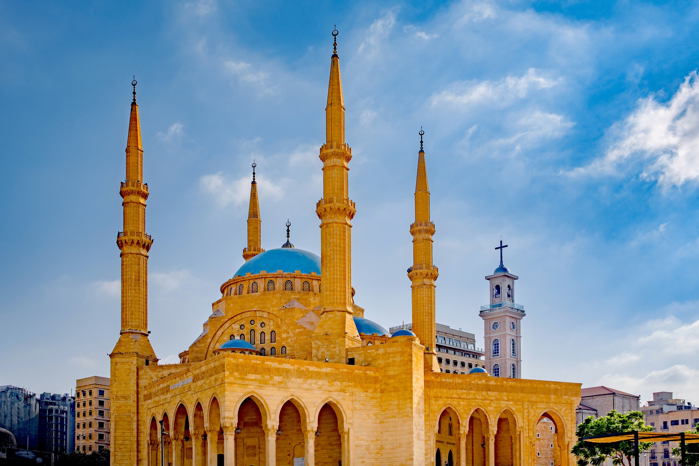
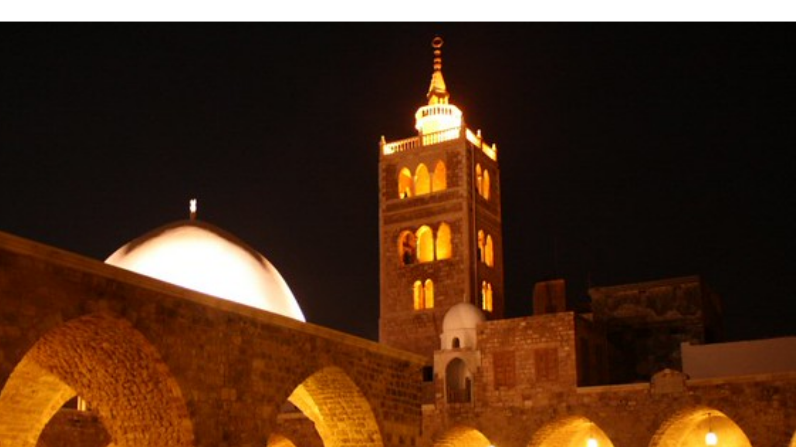
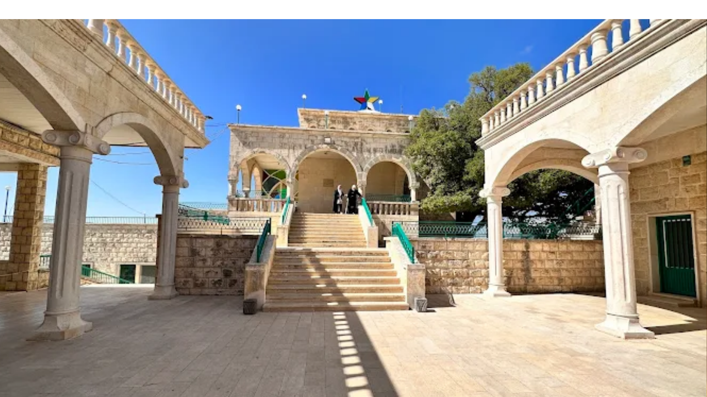
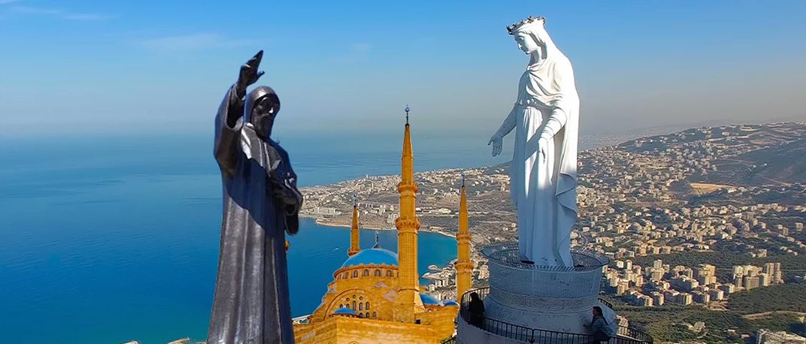

Ministry of Tourism Lebanon
DISCOVER LEBANON
With 18 officially recognized religious communities, including Maronite, Greek Orthodox, Greek Catholic, Armenian, Sunni, Shia, Druze, and Alawite communities among others, Lebanon is a country in which religious identity is inseparable from cultural identity. Faith here is not simply practiced, it is lived, celebrated, and publicly displayed in ways that give the country an extraordinary spiritual energy.
Religious tourism in Lebanon is unlike anywhere else in the Arab world. Within a single day's drive, a visitor can stand in a Crusader cathedral, walk through the ancient Qadisha Valley to a 7th-century monastery, visit the shrine of Our Lady of Lebanon overlooking the sea, and hear the call to prayer echoing through the old souks of Tripoli. The journey between these places is itself part of the experience.
Lebanon does not ask visitors to choose between faiths or histories. It presents them all, side by side, sometimes within the same street, and invites the traveler to sit with the complexity of a country that has made coexistence its defining, if sometimes difficult, vocation.


Standing on a mountaintop 650 meters above Jounieh Bay, the bronze statue of Our Lady of Lebanon is the most iconic Christian monument in the country. The site draws hundreds of thousands of pilgrims every year, particularly on the Feast of the Assumption on August 15, when worshippers climb the mountain on foot as an act of devotion. The view from the shrine's terrace, overlooking the bay and the coastline all the way to Beirut, is extraordinary.
The Qadisha Valley, a UNESCO World Heritage Site, is dotted with ancient monasteries that have clung to its sheer cliff faces since the earliest centuries of Maronite Christianity. The Monastery of Qannubin, carved directly into the rock, served as the seat of the Maronite Patriarchate for centuries. The Monastery of Mar Elisha and the Hermitage of Mar Antonios Qozhaya are equally ancient and equally moving. Walking between them through the valley floor is one of the most spiritually immersive hikes in Lebanon.


One of the oldest Christian churches in Beirut, Saint George Cathedral has been rebuilt and restored multiple times across its long history. Its current 19th-century structure stands in Downtown Beirut almost directly beside the Mohammed Al-Amin Mosque, a physical symbol of Lebanon's coexistence that has become one of the city's most photographed and meaningful images. Beneath the cathedral, excavations have revealed Byzantine and Roman religious structures dating back to the earliest days of the city.
Completed in 2008, the Mohammed Al-Amin Mosque is Beirut's most prominent Islamic monument, a grand Ottoman-inspired structure with four minarets and a central blue dome that dominates the Downtown skyline. Built to hold over 4,000 worshippers, it is the largest mosque in Lebanon and stands as a symbol of the country's Sunni community and its vision for Beirut's postwar revival. Non-Muslim visitors are welcome outside prayer times.


Originally built as a Crusader cathedral in the 12th century and converted into a mosque after the Mamluk conquest of Tripoli in 1289, the Great Mosque of Tripoli is one of the most historically layered religious buildings in Lebanon. Its architecture still bears traces of its Crusader origins alongside Mamluk additions and later Ottoman modifications. It remains an active mosque at the heart of Tripoli's old city and one of the most visited religious sites in the north.
The Chouf district of Mount Lebanon is the heartland of Lebanon's Druze community, a religious minority whose faith blends elements of Ismaili Islam, Gnosticism, and Greek philosophy into a distinct and secretive tradition. The Druze khalwas, prayer houses that serve as places of spiritual retreat and community gathering, are found throughout the Chouf villages and are central to Druze religious life. The Mukhtara palace complex, seat of the Jumblatt family, is the cultural heart of Druze Lebanon and open to respectful visitors.

The largest Christian community in Lebanon, the Maronite Church has been rooted in the Lebanese mountains since the 4th century. Its spiritual home is the Qadisha Valley, and the Maronite Patriarchate, based in Bkerke, has been a central institution in Lebanese national life for centuries. The faith maintains its own liturgy in the ancient Syriac language alongside Arabic.
Lebanon's Sunni Muslim community is concentrated primarily in the coastal cities of Tripoli, Sidon, and West Beirut, as well as in the Beqaa Valley. Tripoli's magnificent collection of Mamluk mosques, madrasas, and khans represents one of the finest surviving examples of medieval Sunni religious architecture in the Arab world, an extraordinary legacy of faith expressed in stone.
The Shia community is concentrated in South Lebanon, the Nabatieh governorate, and the Baalbek–Hermel region. The Ashura commemorations held annually in Nabatieh city are among the most significant Shia religious observances in the Arab world, drawing tens of thousands of participants. Shia pilgrimage sites, particularly shrines associated with companions of the Prophet, are scattered throughout southern Lebanon.
The Druze faith, practiced by roughly 5% of Lebanon's population concentrated in the Chouf district of Mount Lebanon, is one of the most distinctive religious traditions in the world. Its theology is esoteric and its full teachings are known only to initiates, but its community life is deeply visible in the mountain villages of the Chouf, where khalwas, traditional dress, and a strong sense of collective identity define daily life.
The Greek Orthodox community of Lebanon traces its roots to the ancient Patriarchate of Antioch, one of the oldest Christian institutions in the world. Its churches, concentrated in the Koura district of North Lebanon, Beirut, and the Metn, are known for their Byzantine iconography and their preservation of the ancient liturgical traditions of the Eastern Church.
Lebanon also hosts significant Armenian Catholic and Armenian Apostolic communities, descendants of refugees from the 1915 genocide, concentrated in Beirut's Bourj Hammoud district. Smaller communities of Greek Catholics, Syrian Orthodox, Roman Catholics, Alawites, and Ismailis complete Lebanon's extraordinary religious mosaic, a diversity of faith traditions that has no parallel in any other country of comparable size in the world.
Lebanon offers pilgrimage experiences unlike any others in the region — intimate, accessible, and often set against landscapes of extraordinary natural beauty that encourage spiritual reflection.
The Qadisha Valley Pilgrimage TrailA full-day hike through the UNESCO-listed valley floor passing ancient monasteries, hermit caves, and rock-cut churches. The trail begins at the Cedars of God and descends to historic monastic communities.
The Harissa Mountain Climb
On the Feast of the Assumption (August 15), thousands of Lebanese Christians climb the mountain to Harissa on foot, turning the road into a river of candles and prayer.
Ashura Commemoration, Nabatieh
The Ashura observances in Nabatieh are among the most powerful religious events in Lebanon, a day of mourning, prayer, and communal solidarity.
The Maronite Patriarchate, Bkerke
The historic seat of the Maronite Patriarchate overlooking Jounieh includes a cathedral, patriarchal residence, and sweeping coastal views.
Mar Elisha Monastery, Qadisha
A 13th-century monastery carved into the cliffs of the Qadisha Gorge, reached by a short trail and known for its silence, beauty, and spiritual atmosphere.

Lebanon's ability to present multiple faith traditions side by side, often in the same street or the same valley, makes it one of the world's most powerful living arguments for religious coexistence. Visitors who experience this firsthand leave with an understanding of interfaith life that cannot be found anywhere else in the region.
Unlike beach or ski tourism, religious tourism is not seasonal. Pilgrims visit Lebanon throughout the year, for Ashura in the south, for the Feast of the Assumption in Keserwan, for Christmas and Easter in the mountain villages, and for the quiet contemplative visits to monasteries and shrines that draw seekers in every month of the year.
Many of Lebanon's ancient monasteries and religious institutions depend on visitor donations and pilgrimage-related income for their survival. Religious tourism directly funds the maintenance of some of the country's most irreplaceable heritage sites and supports the monastic and clerical communities who have been their guardians for centuries.
Lebanon draws religious visitors from across the Arab world, the Lebanese diaspora, and international Christian communities drawn by the country's proximity to the Holy Land and its own extraordinarily rich sacred heritage. The Maronite community in particular has a global diaspora, stretching from Brazil to Australia, whose members make regular pilgrimage journeys back to the mountain churches and monasteries of their ancestors.
For the millions of Lebanese living abroad, religious tourism is often the most emotionally powerful form of return, a visit to the village church where parents were married, the shrine where grandparents prayed, or the monastery school where generations of a family were educated. These journeys of personal and collective memory are among the most meaningful tourism experiences Lebanon offers.
Lebanon's religious geography, the mountain monasteries, the coastal shrines, the valley mosques, the Druze highland villages, is inseparable from Lebanese national identity itself. To visit these places is not just to see religious buildings, it is to understand what Lebanon is, why it exists in its particular form, and what it has been trying to become for the last two thousand years.
©2026 All Rights Reserved - Ministry of Tourism Lebanon